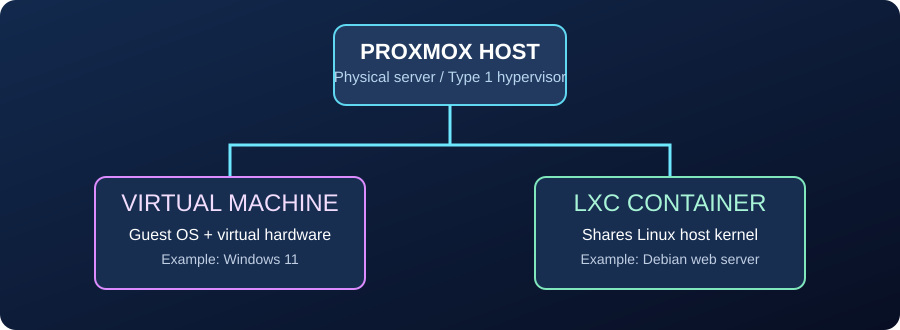
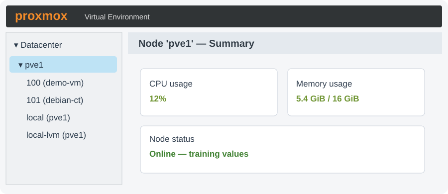

Explore the hypervisor, understand the difference between virtual machines and LXC containers, identify key administrative views, and document a technician's initial inspection.
Your answers are saved in this browser only. You can work without a GitHub login. This lesson does not connect to or change a real Proxmox server.
A small company wants a reliable host for its Windows and Linux workloads. Your first job is to inspect its virtualization platform and explain the relationship between the physical server, the hypervisor, and guest workloads.
Safety: this first lab is read-only. Do not create, delete, reboot, or reconfigure workloads on production equipment.

VMs have their own guest kernels. Linux LXC containers share the Proxmox host's Linux kernel; they isolate workloads but are not full virtual machines.

Illustrative training graphic. Menu positions and labels may vary slightly by installed Proxmox release.
Click Datacenter, the pve1 node, a VM, an LXC container, or a storage entry. Then open Summary, Network, or Shell where available. The scenario data is fictional.
Finish these four verified simulator actions. Each is worth 10 assessment points.
Work in order. Follow the instructions and mark a task complete once you have explored the relevant screen. These guided checkpoints count toward task completion, separately from your scored assessment.
Select one answer per question. Click Grade Assessment to receive feedback. The questions are worth 10 points each; simulator challenges are worth an additional 40 points, for a total of 100.
For students who have access to classroom hardware, safely repeat these read-only checks. Record actual observations; do not copy example resource values from the simulator.
https://HOST-IP:8006 after instructor authorization. An untrusted certificate warning may appear until your internal certificate lab is completed.The print report contains your name and date, all eight guided steps, the six-question assessment, four simulator challenges, your real-device checklist and technical observations, and a sign-off line.
Introduction to Proxmox VE • Network Support Services
Student: Date: Host:
Guided tasks: Simulator: Knowledge: Total assessment: Status:
CPU / RAM:
Storage:
Node status:
Observations:
Assessment scoring validates in-page simulations and quiz selections only. Live-device completion is self-reported and requires instructor verification. Created by Mr. Beaird.